あなたの「普通」が誰かの悩みを解決する！ 知識ゼロから小さく稼ぐ商品の作り方
あなたの本業は副業になる ～人生後半の武器を手に入れる働き方～
はじめに
第1章 副業したい。でも、何をすればいいか分からない
副業に興味を持ったきっかけ
情報過多が生む「副業迷子」
40代が副業で失敗するパターン
副業に「向いていない人」はいない
第2章 あなたの「普通」は、誰かの悩みを解決する
メンターとの出会い
「普通」の正体
キャリアの棚卸しとは何か
棚卸しの具体的なやり方
「普通」が「商品」になる瞬間
第3章 経験をお金に変える3つの視点
経験は「そのまま」では商品にならない
3つの視点で経験を変換する
佐伯の変換練習
「強み」を「商品」に変える等式
ニッチな方が売れる理由
第4章 最初の商品は小さくていい
完璧主義が副業を殺す
最初の商品は「5分で読める」で十分
チェックリスト作成の実践
「小さな商品」から始めて「大きな商品」へ育てる
価格設定の考え方
第5章 顔出しをしなくても、実名でなくても始められる
副業にまつわる3つの不安
不安1：会社にバレる？
不安2：顔出し・SNS発信が必要？
不安3：家族の反対
佐伯の最初の一歩
第6章 副業で失敗する人は、売る前に作りすぎる
1ヶ月間、誰にも見せなかった原稿
「ニーズ確認ファースト」の原則
5人に聞く技術
フィードバックのもらい方
佐伯が気づいたこと
完璧主義より「リリース速度」
第7章 本業を活かす副業は、人生後半の武器になる
初めての有料相談
副業は「お金」だけではない
佐伯が気づいた「副業の本質」
人生後半の「選択肢」を増やす
これからの一歩
おわりに
はじめに
はじめに
あなたは今、副業に興味を持ちながら、こんなことを思っていませんか。
「副業をやってみたいけど、自分には特別なスキルがない」
「動画編集もプログラミングも、SNS発信も苦手で……」
「40代になってから、今さら新しいことを学べるのだろうか」
この本を手に取っていただいたということは、きっとそういう気持ちを抱えながらも、何かを変えたいと思っている方ではないかと思います。
私が伝えたいのは、たった一つのことです。
あなたには、もうすでに副業の種がある。
副業というと、多くの人は「何か新しいスキルを身につけなければいけない」「若い人には勝てない」と感じます。
でも、それは大きな誤解です。
本業で20年、30年と積み重ねてきたあなたの経験は、他の誰かにとって喉から手が出るほど欲しい情報です。
新人教育のコツ。
クレームを穏やかに解決する方法。
社内の根回しの仕方。
業界特有の落とし穴。
失敗から学んだ教訓。
これらはすべて、同じ道を歩もうとしている人にとって、価値ある商品になります。
この本では、48歳の会社員・佐伯誠一が、副業設計コンサルタントの高城美咲との出会いを通じて、本業経験を棚卸しし、小さな副業を設計していく物語を通じて、あなたに必要な考え方と具体的なステップをお伝えします。
難しいことは何もありません。
顔出しも、SNS発信も必要ありません。
あなたが今日からできる、小さな一歩があります。
さあ、あなたの本業を、副業に変えましょう。
01第1章 副業したい。でも、何をすればいいか分からない
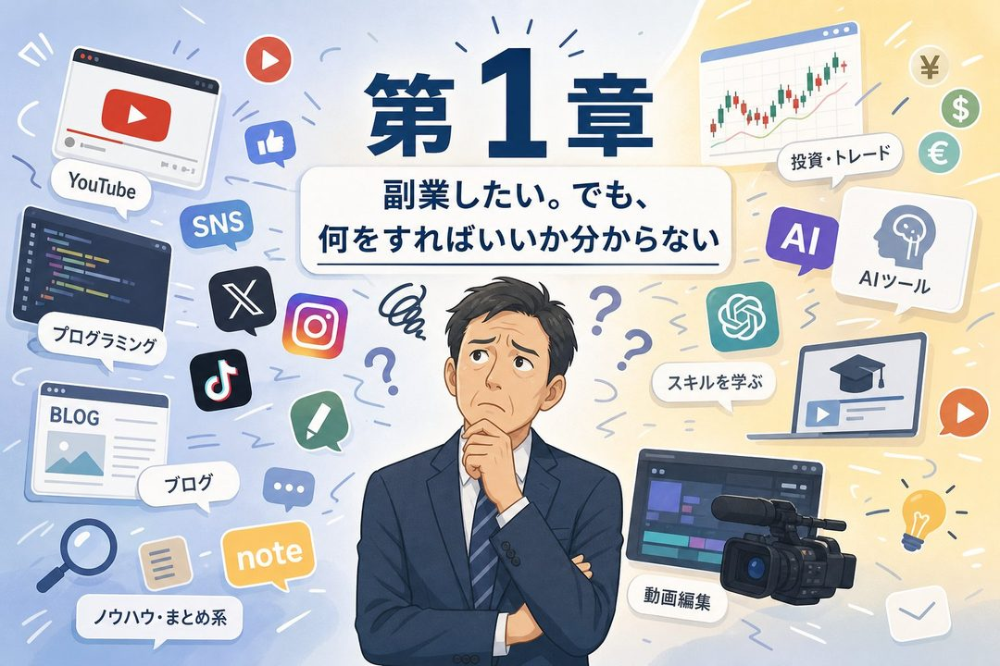
第1章：副業の迷宮
副業に興味を持ったきっかけ
佐伯誠一は、スマートフォンを眺めながら、ため息をついた。
画面には「未経験から月100万円！AI副業で人生を変えろ」「スマホ1台で自動収益を実現」「誰でも3日で動画編集マスター」などの広告が次々と流れてくる。
「…これ、全部自分には無関係だ」
48歳。
営業職20年。
それなりに会社では評価されているが、老後資金の不足、子どもの教育費の重さ、将来への漠然とした不安が、最近になって急に大きく感じられるようになっていた。
副業に興味を持ったのは、半年前のことだった。
職場の後輩が「副業で月5万円稼いでいる」と話しているのを聞いたとき、最初は「へえ、すごいな」と他人事のように思っていた。
しかし、その後輩がどんどん生き生きとしてくるのを見るうちに、焦りを感じるようになった。
自分には何があるのだろう。
動画編集？ 学ぶ時間も体力もない。
ブログ？ 毎日書き続けるのは難しい。
せどり？ 初期費用も在庫リスクも怖い。
プログラミング？ 今さら、それは……。
副業を始めたいと思った瞬間、最初にぶつかる壁は「何をすればいいか分からない」という迷子状態だ。
これはあなただけの悩みではありません。
副業に興味を持つ多くの40代・50代が、最初に同じ壁に直面します。
情報過多が生む「副業迷子」
現代は、副業に関する情報が溢れかえっています。
YouTubeで「副業」と検索すると、何千もの動画がヒットします。
SNSには「月収〇〇万円達成」という投稿が溢れ、書店には副業本が山積みになっています。
ところが、情報が多ければ多いほど、人は動けなくなります。
心理学では、これを「選択のパラドックス」と呼びます。
選択肢が増えすぎると、選ぶこと自体がストレスになり、結果として「何もしない」という選択が最も楽になってしまうのです。
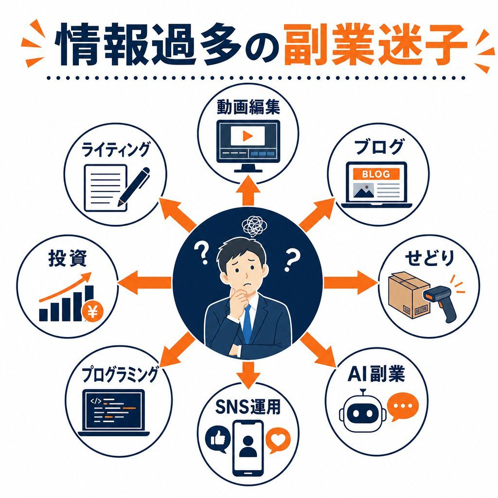
情報過多の副業迷子
佐伯が抱えた「何から始めればいいか分からない」という悩みは、むしろ当然の反応です。
情報過多の時代において、迷うことは知性の証明でもあります。
問題は、何を選ぶかではなく、自分の現在地を正確に把握していないことにあります。
40代が副業で失敗するパターン
40代が副業を始めて失敗するパターンには、共通点があります。
パターン1：流行に飛びつく
「今はAI副業が熱い」「動画編集は需要がある」という情報を見て、自分には興味も適性もないのに始めてしまう。
続かずに挫折し、「やっぱり自分には無理だ」という結論になる。
パターン2：スキル習得に時間をかけすぎる
副業を始める前に「まずはスキルを磨かなければ」と、プログラミングスクールや動画編集講座に高額を投じる。
しかしスキルが身についた頃には、疲弊して副業に回すエネルギーがなくなっている。
パターン3：完璧主義に陥る
「準備が整ったら始めよう」「もっと勉強してから」と、行動を先送りし続ける。
気づけば1年が過ぎ、何も変わっていない。
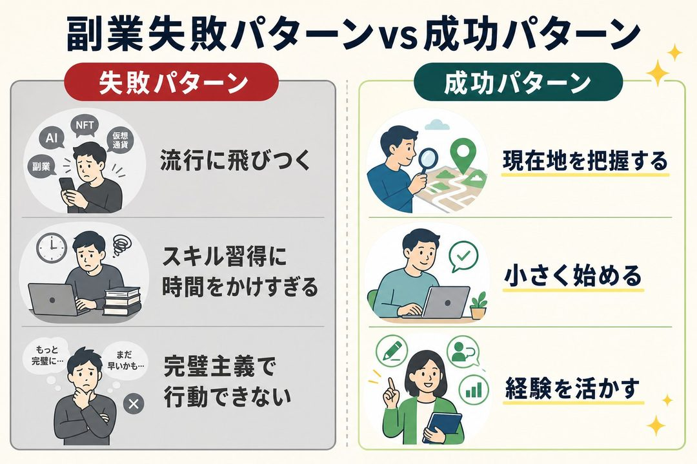
副業失敗パターンvs成功パターン
これらの失敗に共通するのは、自分の現在地を把握せずに動き始めることです。
副業で最初に必要なのは、流行に飛びつくことでもなく、新しいスキルを学ぶことでもありません。
まず自分が今どこにいるか、何を持っているかを知ることです。
副業に「向いていない人」はいない
よく「副業に向いていない人はいますか？」と聞かれます。
私の答えは、「いません」です。
ただし、一つだけ条件があります。
自分が持っているものを正しく認識できていること。
逆に言えば、「自分には何もない」と思い込んでいる人は、副業が難しくなります。
これは能力の問題ではなく、認識の問題です。
佐伯は「自分には特別なスキルがない」と思っていましたが、実際には20年分の営業経験、業界知識、人間関係構築の技術、失敗から学んだ教訓が積み上がっていました。
問題はスキルではなく、「価値の見つけ方を知らない」だけだったのです。
次の章から、その価値の見つけ方を一緒に探っていきましょう。
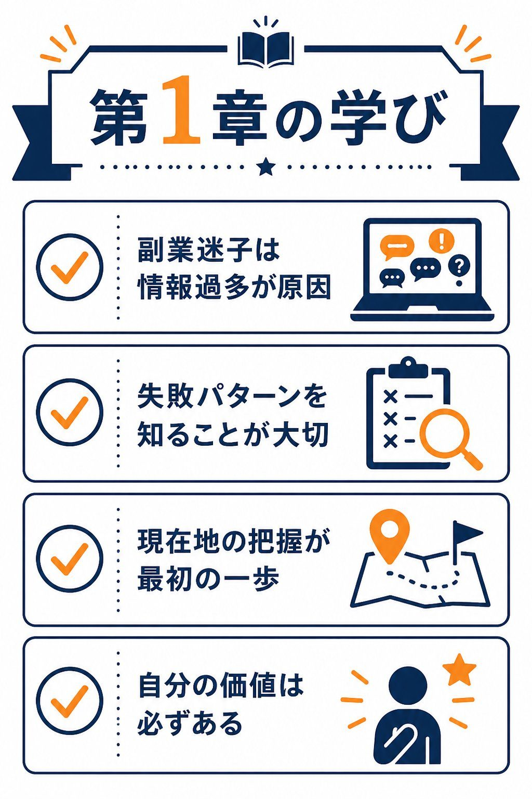
第1章の学び
02第2章 あなたの「普通」は、誰かの悩みを解決する
第2章：普通の価値に気づく
メンターとの出会い
佐伯が初めて高城美咲のカフェに足を運んだのは、知人の紹介がきっかけだった。
「副業設計のコンサルをやっている人がいるんだけど、一度会ってみれば？」
半信半疑で訪れた佐伯に、美咲は温かい笑顔で声をかけた。
「佐伯さん、今どんな副業を考えていますか？」
「……正直、何も決まっていないんです。
自分には普通のことしかできなくて。
営業もまあ、長くやってきましたけど、それが副業になるとは思えなくて」
美咲はにっこりと答えた。
「面白いですね。
普通のことほど、他人には価値があるんですよ。」
佐伯は、その言葉の意味をすぐには理解できなかった。
「普通」の正体
人は自分が長年続けてきたことに対して、無意識に「これくらい誰でもできる」と感じてしまいます。
これは心理学でいう「知識の呪い（Curse of Knowledge）」という現象です。
専門的な知識や経験を持つと、それを知らない状態に戻ることが難しくなり、他人も自分と同じくらい知っていると錯覚してしまうのです。
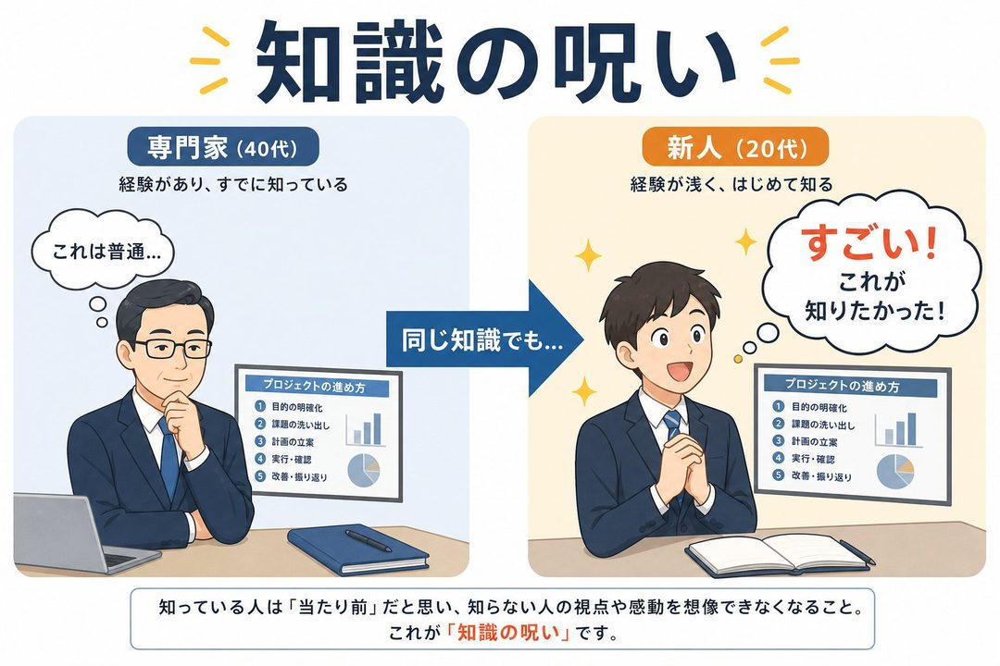
知識の呪い
佐伯が「普通」と感じていた営業スキルを、新入社員や営業初心者から見たらどう映るでしょうか。
「電話でのアポイント取りが怖くて仕方ない」「お客様に断られるとどう切り返せばいいか分からない」「プレゼン後の沈黙が怖い」「クレームが来たときパニックになる」
これらは、佐伯にとっては20年前に解決した「懐かしい悩み」です。
しかし、今まさに同じ場面で困っている人にとっては、解決策が喉から手が出るほど欲しい情報なのです。
あなたの「普通」は、かつてのあなたが苦労して手に入れたものです。
キャリアの棚卸しとは何か
美咲は佐伯に、一枚のシートを渡した。
「これに、今まで仕事で解決してきた問題を書いてみてください。
どんな小さなことでもいいです」
佐伯はペンを持ち、しばらく考えた後、少しずつ書き始めた。
「……新人教育？」
「はい、どんなことを教えてきましたか？」
「最初の3ヶ月で失敗しやすいポイントとか……電話の切り方とか……上司との報告の仕方とか……」
「素晴らしい。他には？」
「クレーム対応も、けっこうやってきました。
最初はパニックになったけど、今はある程度型が決まってきて。
あと、社内調整というか、部門間の根回しとか……」
美咲がにこりとした。
「佐伯さん、それだけでもう5〜6種類の副業の種がありますね」
佐伯の棚卸し結果
キャリアの棚卸しとは、自分がこれまでに経験してきた職務上の経験・スキル・知識・失敗・成功を時系列に沿って整理するプロセスです。
転職においても活用されますが、副業設計においては「誰かの問題を解決できるもの」に焦点を当てるという点が特徴的です。
棚卸しの具体的なやり方
では、実際にどうやって棚卸しをすればいいのでしょうか。
美咲が佐伯に渡したシートの質問項目を紹介します。
質問1: これまで仕事で解決してきた問題は？
時系列ではなく、「解決してきた問題」という視点で書き出します。
「新入社員の定着率を改善した」「クレームをリピート購買に転換した」「部門間の対立を調整してプロジェクトを完成させた」など。
質問2: 後輩や部下によく相談される内容は？
あなたが「これくらい当たり前」と思っていることで、後輩が頻繁に聞いてくることは何でしょうか。
「佐伯さんに聞けばわかる」と言われることが、副業の種です。
質問3: 失敗から学んだことで、今に活きていることは？
失敗体験は副業の強力な武器になります。
「同じ失敗をしなかったことで助かる人がいる」という視点で書き出してみましょう。
質問4: 自分の業界・業種ならではの常識は？
「えっ、他の業界の人はこれを知らないの？」と感じることが、副業の種になります。
業界の裏事情、業者との付き合い方、評価されるために必要な暗黙のルールなど。
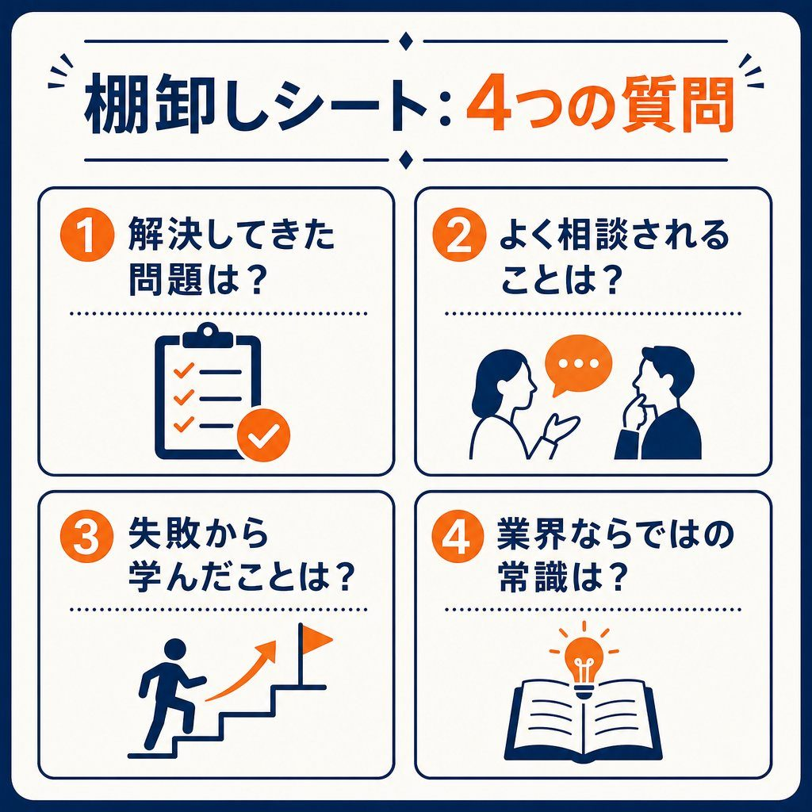
棚卸しシート4つの質問
「普通」が「商品」になる瞬間
佐伯は、棚卸しをしながら気づいた。
「自分が当たり前にやってきたことを、後輩に聞かれるたびに説明している。
それを、まとめれば……」
「そうです。
それが副業の原石です」と美咲は言った。
自分にとって当たり前のことが、他人には価値ある情報になる瞬間。それが副業の始まりです。
誰かの「知りたい」を満たせること。
誰かの「できない」を「できる」に変えられること。
それがお金になるのです。
あなたが長年の本業で積み上げてきた「普通」は、誰かの「特別」です。
次の章では、その普通をどうやってお金に変えるかを具体的に見ていきます。
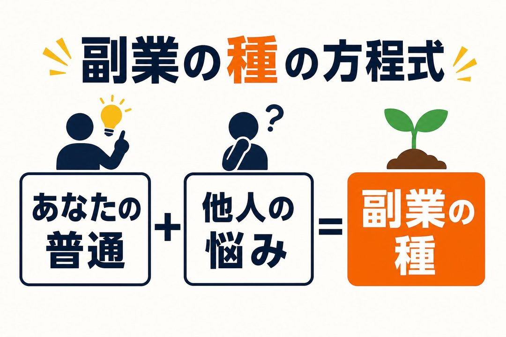
副業の種の方程式
03第3章 経験をお金に変える3つの視点
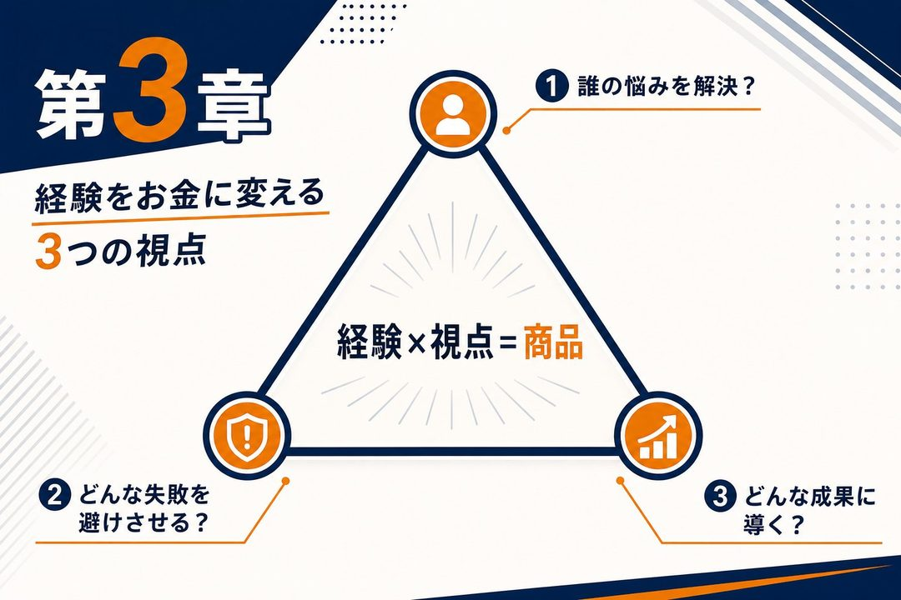
第3章：経験の商品化
経験は「そのまま」では商品にならない
佐伯は、棚卸しシートを書き終えた後、美咲に相談した。
「書き出してみたら、けっこうたくさんあるんですね。
でも……これをどうやって商品にすればいいんですか？」
美咲が答えた。
「そこが大事なポイントです。
経験はそのままでは商品にならないんです。
相手の悩みを解決する形に変換して、初めて商品になります。」
これは多くの人が陥る誤解です。
「自分の経験を語ること」と「相手の問題を解決すること」は、似て非なるものです。
自己満足の語りは価値を生みません。
相手が「これが知りたかった！」と感じる情報の届け方が、価値を生みます。
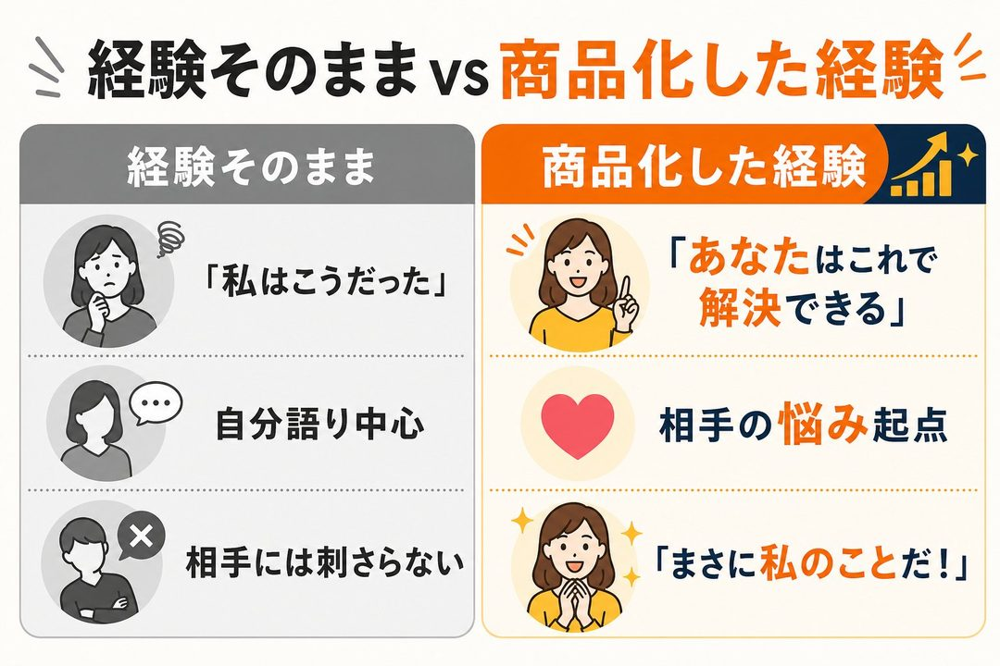
経験そのままvs商品化した経験
3つの視点で経験を変換する
美咲は、経験を商品化するための「3つの視点」を佐伯に教えた。
視点1: 誰の悩みを解決できるか
まず、自分の経験が役に立つ「対象者」を特定します。
「営業職の新入社員」「クレーム対応が苦手な若手社員」「初めて管理職になった30代」など、具体的であるほど価値が高まります。
対象者が絞り込まれているほど、「まさに私のことだ」という共感が生まれます。
視点2: どんな失敗を避けさせられるか
自分が過去に経験した失敗は、相手が同じ轍を踏まないようにするためのガイドになります。
「営業で最初の1年間に絶対やってはいけない3つのこと」「クレーム対応で言ってしまいがちなNGワード」「初めての管理職がやりがちなミスと対処法」など。
失敗談を持っている人は、成功体験しかない人より価値ある情報提供者になれます。
視点3: どんな成果まで導けるか
相手が「この情報を手に入れた結果、どんな状態になれるのか」を明確にします。
「営業の初訪問が怖くなくなる」「クレームの電話でパニックにならなくなる」「部下との関係が改善する」など。
具体的な成果を提示できると、価値が伝わりやすくなります。
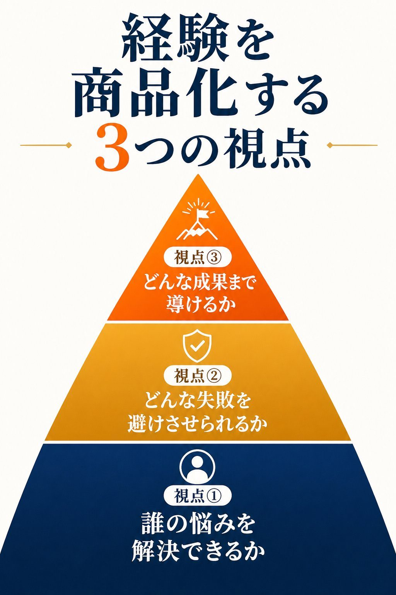
経験を商品化する3つの視点
佐伯の変換練習
美咲は佐伯に「営業の新人教育経験」を例に、3つの視点で変換してもらった。
視点1（誰の悩みを解決できるか）:
「営業職に配属されたばかりで、何をすればいいか分からない新入社員・第二新卒」
視点2（どんな失敗を避けさせられるか）:
「最初の3ヶ月で90%の新人がやってしまう7つのミス。
私も全部やった」
視点3（どんな成果まで導けるか）:
「3ヶ月後に上司から『あいつは見込みある』と言われる状態になれる」
これを組み合わせると、こんな商品コンセプトになります。
「営業1年目がやってはいけない7つのミス——20年目のベテランが現場で実際に見てきた失敗と乗り越え方」
佐伯は驚いた。
「これ……需要、ありますよね？」
「当然です。
今まさに営業1年目で悩んでいる人は、全国に何万人もいます」
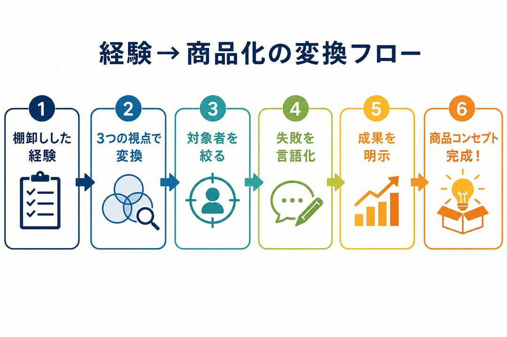
経験→商品化の変換フロー
「強み」を「商品」に変える等式
美咲がホワイトボードに書いた。
「副業の商品は、この式で考えるとシンプルになります」
[あなたの経験・知識・失敗] × [特定の相手が抱える悩み] = 副業商品
ポイントは、掛け算であることです。
経験だけでも、悩みだけでも商品にはなりません。
どちらも必要で、掛け合わせることで初めて価値が生まれます。
そして、相手の悩みが具体的であればあるほど、商品の価値は高くなります。
「営業職の人への情報発信」より「営業1年目の新入社員への、最初の3ヶ月の乗り越え方」の方が、価値も価格も高くなります。
ニッチな方が売れる理由
副業初心者が陥りやすいのは、「なるべく多くの人に役立つ情報を届けたい」という発想です。
しかし、対象を広げれば広げるほど、情報の価値は下がります。
「営業の人に役立つ情報」を発信しても、「あなたのためだ」という感覚は生まれません。
「営業1年目の女性が、初めての飛び込み営業を乗り越えるためのノウハウ」に絞ったとき、その対象者には「まさに私のためだ！」と感じてもらえます。
ニッチな対象者 × 深い解決策 = 価値ある副業商品
あなたが持っている経験は、特定の誰かにとっては唯一無二の解決策になりえます。
次の章では、その解決策を「最初の商品」として形にする方法を見ていきましょう。
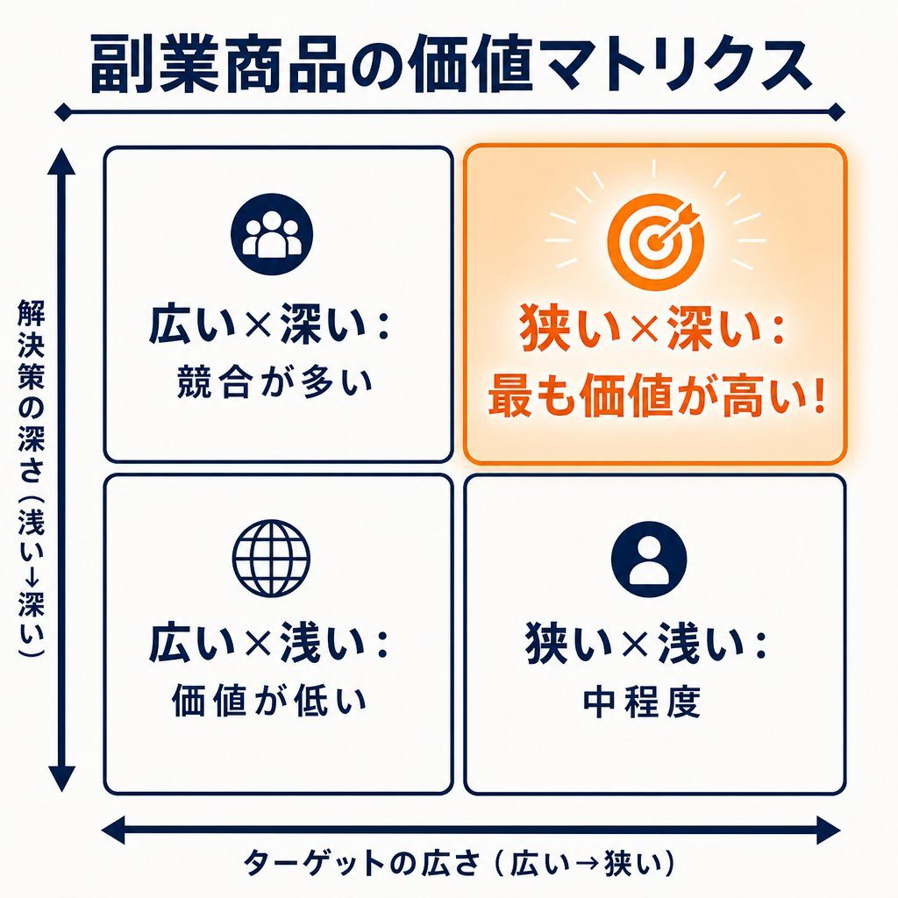
副業商品の価値マトリクス
04第4章 最初の商品は小さくていい
第4章：小さく始める
完璧主義が副業を殺す
佐伯は、家に帰ってから早速作業を始めた。
「よし、電子書籍を作ろう。
5万字くらいで、全10章くらいで、図解もいれて……」
しかし、3日後。
まだ序文の途中だった。
「なんで進まないんだろう……」
1週間後、美咲に報告した。
「電子書籍を作ろうと思っているんですが、なかなか進まなくて」
美咲は少し首を傾けた。
「どれくらいのものを作ろうとしていますか？」
「えっと……10章くらいで、図解もあって、ちゃんとした感じのものを」
美咲は穏やかに言った。
「佐伯さん、まず一度聞いていいですか。
その電子書籍、誰かに読んでもらいましたか？」
「いや、まだ完成していないので……」
「完璧なものを作ってから見せようとしていませんか？」
佐伯はぐっと詰まった。
そのとおりだった。
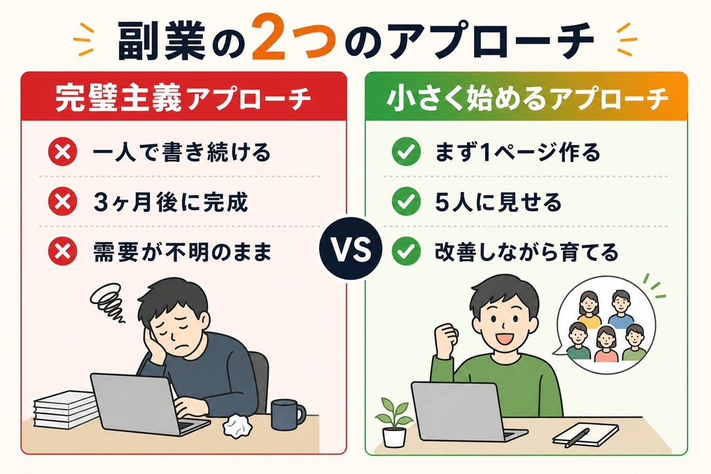
副業の2つのアプローチ
最初の商品は「5分で読める」で十分
美咲が言う。
「副業で最初に作るべき商品は、極限まで小さくていいんです。 5分で読めるPDF1枚。 チェックリスト1枚。
それで十分です」
「そんなに小さくていいんですか？」
「いいんです。
理由は2つあります。
まず、小さければ作れる。
完璧な本を作ろうとすると数ヶ月かかりますが、チェックリストなら今日中に作れます。
そして、小さければ試せる。
作ったものを5人に見せて、反応を確認できます」
副業で最初に必要なのは、完璧な商品ではなく、小さく試せる商品です。
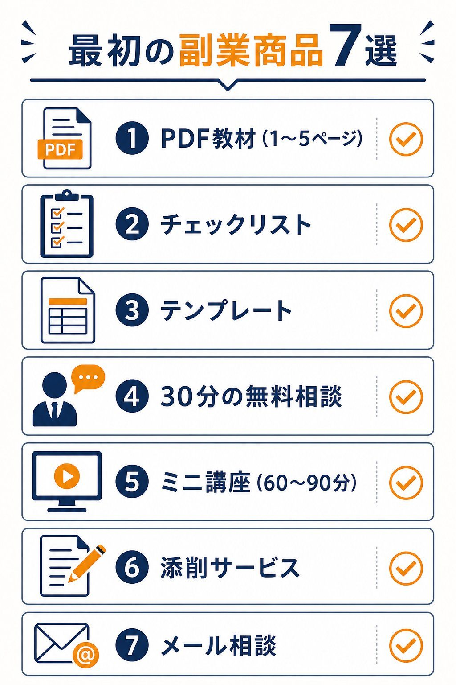
最初の副業商品7選
チェックリスト作成の実践
美咲は言った。
「今から30分で、佐伯さんのチェックリストを作りましょう。
テーマは『営業1年目が最初の3ヶ月でやるべき10のこと』で」
佐伯は少し戸惑いながらも、ペンを持った。
10分後、佐伯はリストを書き終えた。
「……意外と書けるものですね」
「そうです。
この30分が副業の第一歩です」
佐伯が書いたチェックリストの一部を見てみましょう。
美咲が見て言った。
「これ、営業1年目に見せたら、すごく刺さると思いますよ。
あなたが20年かけて学んだことが、ここに詰まっています」
佐伯は後輩にチェックリストを見せた。
「……先輩、これ欲しかったです！ 最初の3ヶ月、全部手探りでやっていたので」
その一言が、佐伯の背中を押した。
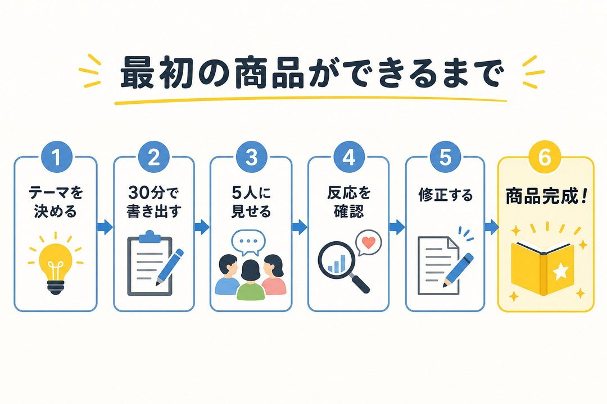
最初の商品ができるまで
「小さな商品」から始めて「大きな商品」へ育てる
最初の小さな商品は、終点ではなく起点です。
チェックリスト → PDF教材 → ミニ講座 → 個別相談 → オンライン講座 → 書籍
これが副業商品の成長ステップです。
最初から書籍を書こうとするのではなく、チェックリストから始め、それを育てていくことで、いつの間にか大きな商品ができています。
しかも、途中で市場の反応を見ながら修正できるため、失敗リスクが最小化されます。
「副業は完璧を目指さず、小さく始めて大きく育てる。」
これが、長く続く副業設計の原則です。
価格設定の考え方
「小さな商品」の価格設定に悩む人も多いのですが、最初は以下を参考にしてみてください。
| 商品形態 | 価格目安 |
|---------|--------|
| チェックリスト（無料配布）| 0円（信頼構築用） |
| PDF教材（5〜10ページ）| 500〜3,000円 |
| テンプレート | 1,000〜5,000円 |
| 30分個別相談（初回）| 0〜3,000円 |
| 60〜90分ミニ講座 | 3,000〜10,000円 |
| 月1回継続相談 | 5,000〜30,000円/月 |
最初は「無料」か「安価」から始め、需要と評判が高まったら価格を上げていくのが賢明です。
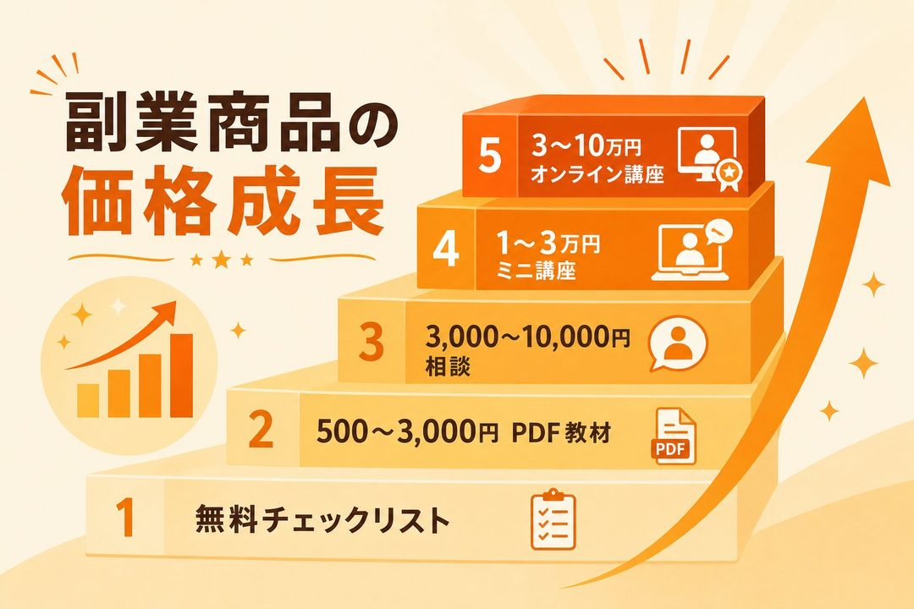
副業商品の価格成長
05第5章 顔出しをしなくても、実名でなくても始められる
第5章：安心して始める
副業にまつわる3つの不安
副業に興味を持つ40代・50代の多くが、行動できない理由として挙げるのが3つの不安です。
佐伯も例外ではありませんでした。
「でも……会社に副業がバレたら、まずいですよね？」
「SNSで顔出しして発信するのは、ちょっと……」
「家族が副業に反対したら、どうすればいいか……」
これらは、副業を考える人なら誰もが感じる、ごく自然な不安です。
そして実は、どれも解決できる不安です。
不安1：会社にバレる？
まず重要なのは、あなたの会社が副業を禁止しているかどうかを確認することです。
2018年に政府が「副業・兼業の促進に関するガイドライン」を改定して以来、副業を解禁する企業は増え続けています。
実は多くの会社員が「なんとなく禁止かも」と思い込んでいるだけで、就業規則を確認すると副業が可能だったということは珍しくありません。
副業が禁止されている場合でも、本業への支障がなく、会社の利益と競合しない範囲であれば、黙認されているケースも多くあります。
ただし、法的なリスクを避けるためにも、就業規則を必ず確認してください。
会社にバレる主な原因は「住民税の金額変化」です。
副業収入が年間20万円を超えると確定申告が必要になり、住民税の通知が会社に届きます。
これを避けるには、確定申告時に「住民税を自分で納付（普通徴収）」を選ぶ方法があります。
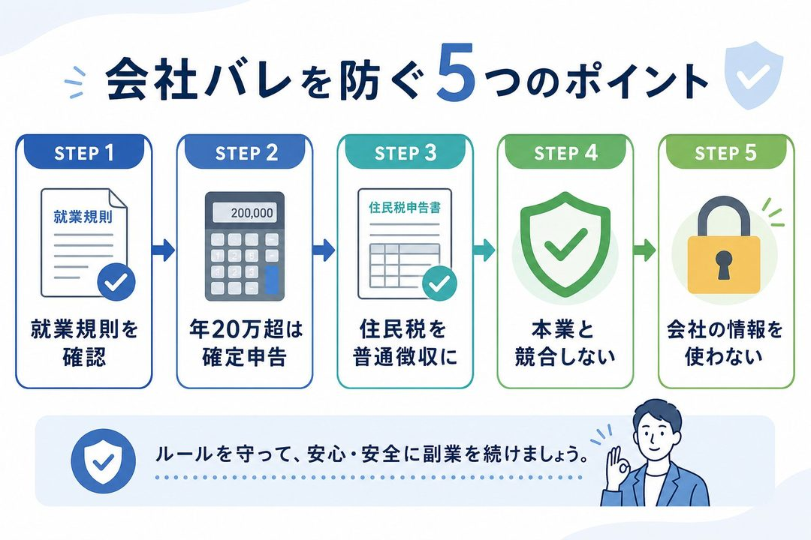
会社バレを防ぐ方法
不安2：顔出し・SNS発信が必要？
「副業=SNSで顔出し発信」というイメージを持っている人は多いのですが、これは大きな誤解です。
本業経験を活かした副業の場合、SNSでフォロワーを集める必要はありません。
最初の顧客は、職場の後輩・知人・友人など、「すでにあなたを信頼している人」から見つけられます。
「SNSで100万人にフォローされる」よりも、「今まさに悩んでいる3人に、的確な情報を届ける」方が、副業の第一歩としては遥かに現実的で効果的です。
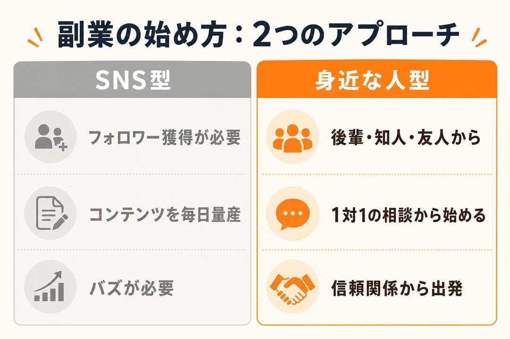
副業の始め方2パターン
顔出しについても、必要はありません。
PDF教材の販売、メール相談、テキストベースのコーチングなどは、顔出しなしで完結します。
ペンネームや仕事専用のニックネームを使うことも、プライバシー保護の観点から合理的な選択です。
不安3：家族の反対
「家族が反対したら」という不安も、多くの方が持っています。
これについては、最初から「副業をやる宣言」をするのではなく、小さく始めて成果を見せるという方法が有効です。
最初から「月10万円稼ぐ副業を始める」と言うと、家族も心配します。
しかし「後輩の相談に乗ったら感謝された」「ちょっと情報をまとめたら欲しいと言われた」という小さな成功体験を積み重ねていくと、家族の見方も変わっていきます。
成果は、言葉より雄弁です。
佐伯の最初の一歩
美咲からのアドバイスは、シンプルだった。
「まずは1人に声をかけてみてください。
後輩でも、知人でも。
『最近副業のことを考えていて、相談に乗ってほしい』でも、『ちょっとお願いがあって』でも何でもいいです」
佐伯は後輩の田中に声をかけた。
「田中、最近営業どう？ 何か困っていることあったら、聞くよ」
田中はぱっと顔を明るくした。
「先輩！ 実はちょうど困っていることがあって……」
30分の話し合いの後、田中は言った。
「先輩、めちゃくちゃ助かりました。
書いてもらったこのメモ、お守りにします」
佐伯は、胸が温かくなるのを感じた。
これが、副業の始まりです。
特別なスキルも、SNSも、顔出しも必要ありませんでした。
ただ、自分の経験を必要としている人に、正直に届けただけです。
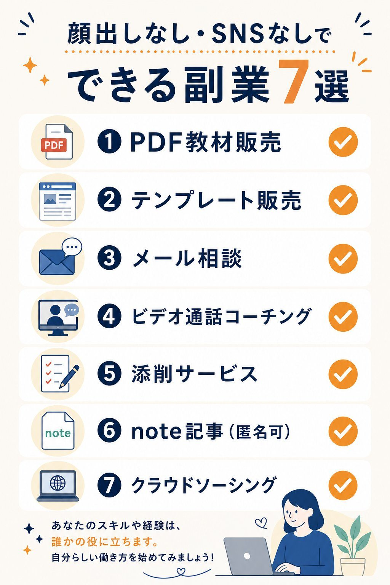
顔出しなし・SNSなしでできる副業7選
06第6章 副業で失敗する人は、売る前に作りすぎる
第6章：ニーズ確認の重要性
1ヶ月間、誰にも見せなかった原稿
佐伯は、電子書籍の原稿を書き始めて1ヶ月が経過していた。
「先輩……毎晩遅くまで書いているんですよ」と後輩の田中が心配そうに言う。
「うん、でもまだ完成していなくて……」
美咲との次のセッションで、佐伯は正直に話した。
「先月から毎晩2〜3時間書いているんですが、まだ半分も完成していなくて」
「誰かに見せましたか？」
「まだ仕上がっていないので……もう少し完成してから」
美咲は優しく、しかしはっきりと言った。
「佐伯さん、そのやり方は危険です。
売れるか分からない商品を、1ヶ月間作り込んでしまっている。」
佐伯はぐっとなった。
「でも、ちゃんとしたものを作らないと……」
「誰のために作っているんですか？」
その質問に、佐伯は答えられなかった。
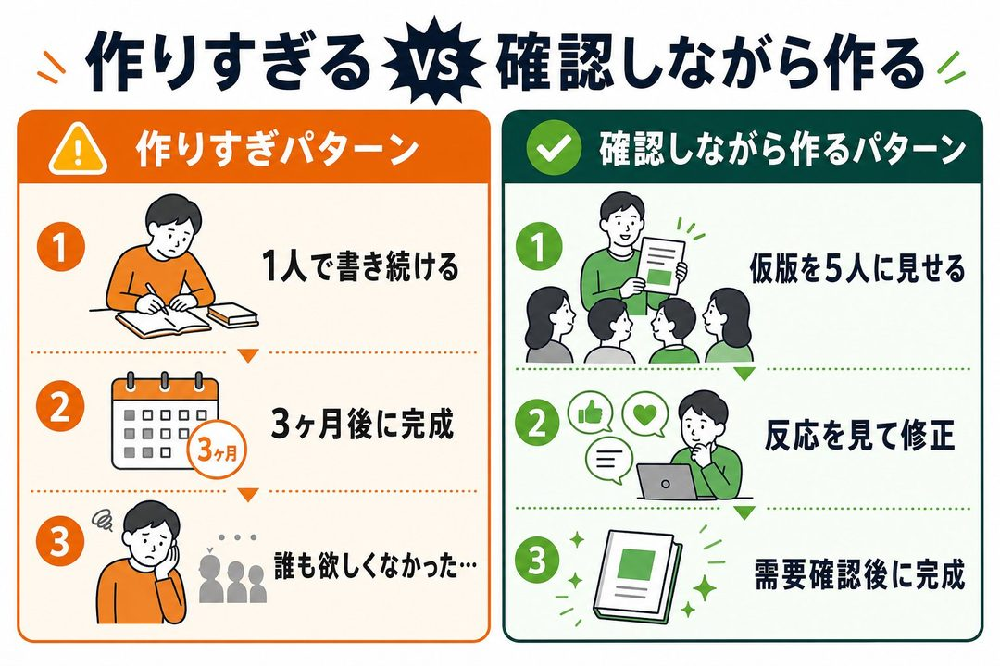
作りすぎる人vs確認しながら作る人
「ニーズ確認ファースト」の原則
マーケティングの世界には「MVP（Minimum Viable Product：最小限の実行可能な製品）」という考え方があります。
完璧な製品を作ってから市場に出すのではなく、最小限の機能を持った製品を早期にリリースし、顧客の反応を見ながら改善していくアプローチです。
副業でも同じ考え方が適用できます。
「完璧な商品を作ってから人に見せる」ではなく、「まず人に聞いてから、必要最小限の商品を作る」。
これが失敗しない副業設計の原則です。
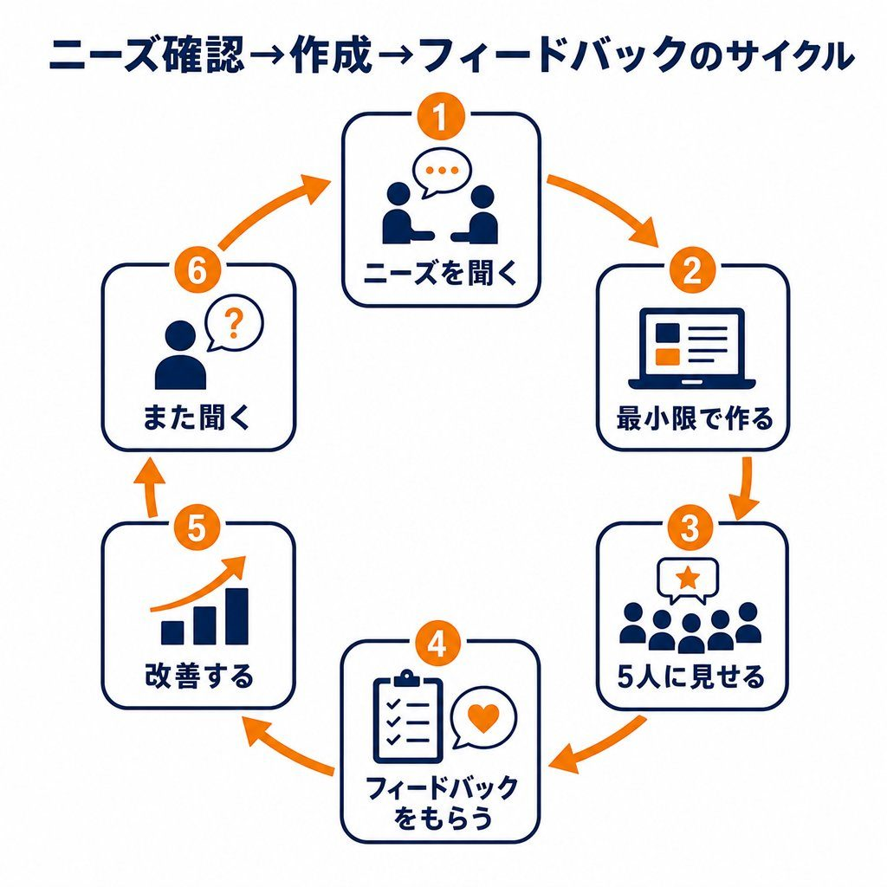
ニーズ確認→作成→フィードバックのサイクル
5人に聞く技術
では、実際にどうやってニーズを確認するのでしょうか。
美咲が教えてくれた方法は、シンプルです。
「身近な5人に聞く」
5人というのは、多すぎず少なすぎない適切な数です。
アンケートや市場調査は必要ありません。
まず、自分が設定したターゲット層に近い知人・後輩・友人5人に声をかけてみましょう。
「今、営業職の新人向けに情報をまとめているんだけど、こんな内容って役に立つと思う？」
「最初に知っていたら良かった！ということを書いているんですが、内容を見てもらえますか？」
このくらい気軽な聞き方で十分です。
5人からのフィードバックは、数百件のアンケートよりも深い示唆を与えてくれることがあります。
フィードバックのもらい方
フィードバックをもらう際は、以下の点を聞くと有益です。
確認すること:
- 「どこが一番役に立ちそうでしたか？」
- 「どこが分かりにくかったですか？」
- 「あったら嬉しいけど、ない内容はありましたか？」
- 「このような情報に、いくらまでなら払えますか？（または、無料でも読まない？）」
最後の価格に関する質問が特に重要です。
「無料でもあまり読まないな」と感じるなら、内容か対象者を見直す必要があります。
「これは3,000円でも欲しい」と言われれば、需要があるサインです。
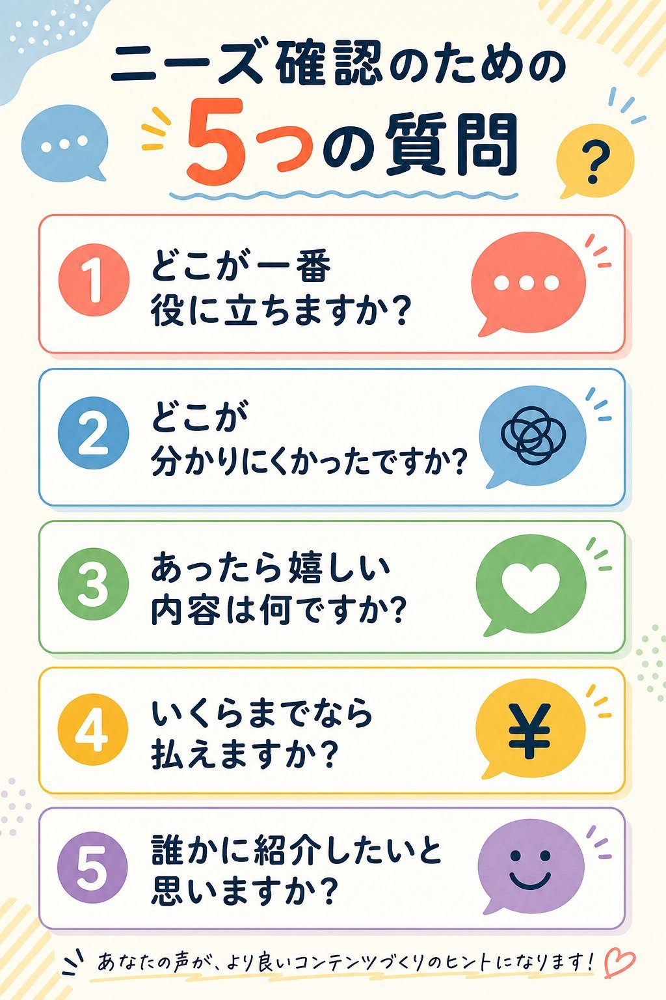
ニーズ確認のための5つの質問
佐伯が気づいたこと
美咲のアドバイスを受け、佐伯は書きかけの原稿を5人の後輩・知人に見せた。
返ってきた反応は、予想外のものだった。
「先輩、第3章の『クレーム対応の基本型』だけで十分価値があります。
他はいらなくてもいいくらい」
「第1章の長い説明は読み飛ばして、第3章から読みました。
そこが刺さりました」
佐伯は、1ヶ月書き続けた第1・2章よりも、何気なく書いた第3章の方が評価されていることを知った。
「あんなに時間をかけた部分が……」
美咲が言った。
「でも、これが大事な情報です。
1ヶ月後ではなく、1週間後に分かっていたら、どうだったと思いますか？」
「早く聞けばよかった」という気づきが、副業設計を加速させます。
完璧主義より「リリース速度」
副業においては、完璧主義は最大の敵です。
誰も見ていない場所で磨き続けた100点の商品より、5人に見せながら改善した70点の商品の方が、はるかに早く価値を生み出します。
市場に出すことで初めて分かることがあります。
想定外の反応、思わぬ需要、予測しなかったニーズ。
これらは、一人で考えているだけでは絶対に分かりません。
「まず見せて、聞いて、直す」。
これが副業設計の最速ルートです。
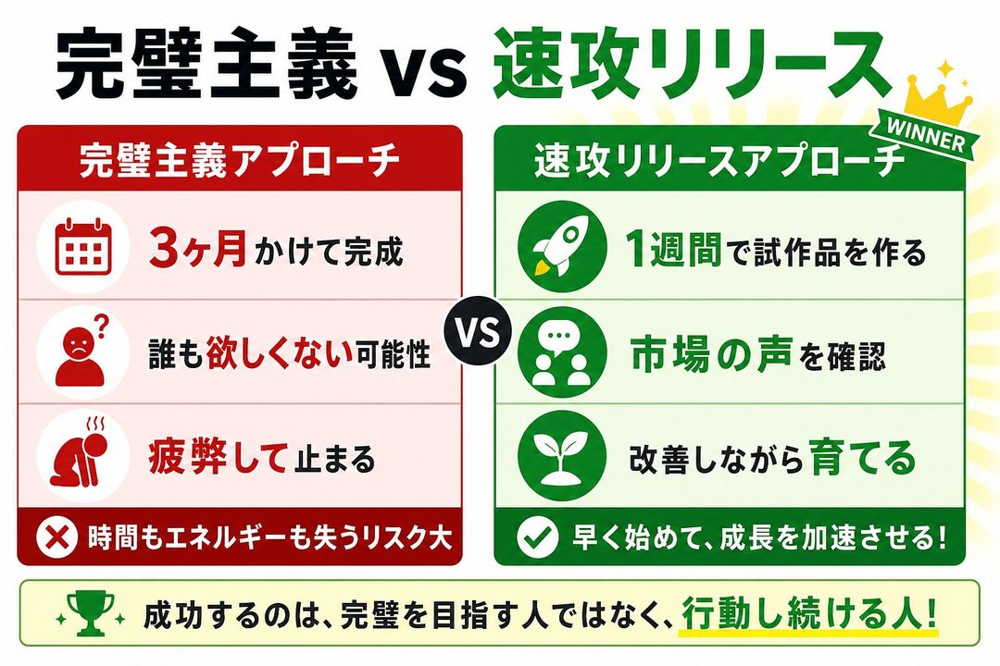
完璧主義vs速攻リリース
07第7章 本業を活かす副業は、人生後半の武器になる
第7章：人生後半の武器
初めての有料相談
佐伯が初めて「有料の個別相談（30分・3,000円）」を受けたのは、副業を始めてから3ヶ月後のことだった。
相談者は、転職して営業職になったばかりの田村さん（27歳）。
知人の紹介だった。
「あの……営業、全然できる気がしなくて。
先月も先々月もほぼゼロで。
もう辞めようかと思っています」
その言葉を聞いた瞬間、佐伯は思い出した。
20年前の自分も、まったく同じことを思っていた。
「大丈夫ですよ。
私も最初の1年間は同じでした。
今から話すことを実践すれば、必ず変わります」
30分後、田村さんは言った。
「先輩……こんなに具体的に教えてもらえるとは思っていなくて。
ネットや本には書いていないことばかりで、すごく助かりました。
20年の経験から話してもらえることが、他の情報と全然違う。」
佐伯の目が、じわりとにじんだ。
「ありがとうございます……」
帰り道、佐伯は美咲にメッセージを送った。
「初めての有料相談が終わりました。
感謝されました」
美咲からの返信は短かった。
「おめでとうございます。
それが、副業の本質です」
佐伯の初有料相談シーン
副業は「お金」だけではない
副業を始める動機は、多くの場合「お金」です。
老後資金の不安、教育費の負担、収入の安定化。
これらは正当な動機です。
しかし、本業経験を活かした副業には、お金以外の価値があります。
1. 自分の価値の再発見
「自分には何もない」と思い込んでいた佐伯が、田村さんに「20年の経験が価値ある情報になっている」と実感できたとき、それはお金では買えない気づきでした。
長年同じ会社で働いていると、自分の成長が見えにくくなります。
副業を通じて「外の世界」に出ると、自分が持っていたものに気づけます。
2. 本業へのフィードバック
「副業を始めたら、本業もうまくいくようになった」という声をよく聞きます。
副業で「相手の悩みを解決する」視点を持つことで、本業の顧客対応や部下の育成にも活きてくるからです。
3. 定年後の収入源と生きがい
60歳で定年を迎えた後、何をすればいいのか。
これは多くの中高年にとって、深刻な問いです。
副業で培った「特定の人の悩みを解決するスキル」は、定年後も継続できます。
体力が落ちても、知識と経験は衰えません。
佐伯が気づいた「副業の本質」
美咲との最後のセッションで、佐伯は言った。
「副業って、別人になることじゃなかったんですね。
今までの自分を活かすことだった」
美咲がにっこりとした。
「そうです。
佐伯さんは何も変わっていない。
ただ、自分が持っているものの届け方を変えただけです」
「20年間、自分では当たり前だと思ってやってきたことが、誰かの役に立てる。
それが分かっただけで、なんか……すごく、楽になりました」
「副業は、お金を稼ぐ手段でもありますが、自分の経験の価値を確認する機会でもあります。
佐伯さんが今まで積み上げてきた20年は、決して無駄じゃなかった。
むしろ、これからが本番です」
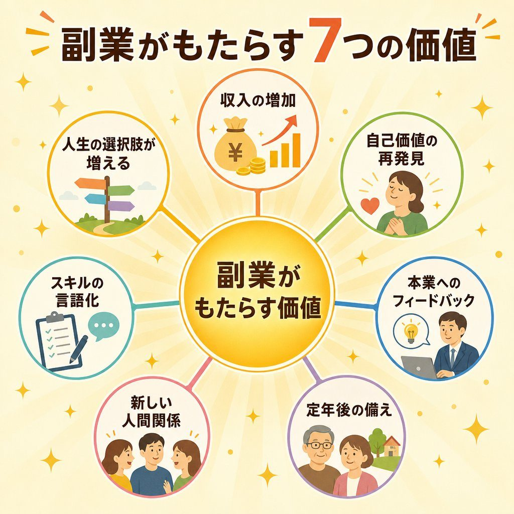
副業がもたらす7つの価値
人生後半の「選択肢」を増やす
副業で月3万円の収入があったとして、それはどんな意味を持つでしょうか。
年収換算で36万円。
決して大きな額ではありません。
しかし、この36万円が「選択肢」に変わります。
「会社が嫌になっても、もう少し踏みとどめる余裕」「子どもの急な出費に焦らない安心感」「転職活動中の生活費の一部」「老後に向けた少しの積み上げ」。
お金の量より、「もう一つの収入源がある」という事実が、精神的な余裕を生み出します。
副業は、人生後半の「保険」であり「武器」であり「生きがい」です。
これからの一歩
この本を読んでいるあなたへ、一つだけ宿題を出します。
今日、この本を読み終わったら、一枚の紙を取り出して、次の4つを書いてみてください。
あなたの棚卸しシート（簡易版）
1. 仕事で解決してきた問題を3つ書く
2. 後輩や周囲によく相談されることを2つ書く
3. 失敗から学んだことで今に活きていることを1つ書く
4. 自分の業界・職種ならではの常識を1つ書く
たったこれだけでいいです。
書いたものが、あなたの副業の原石です。
完璧でなくていい。
まず書くことが最初の一歩です。
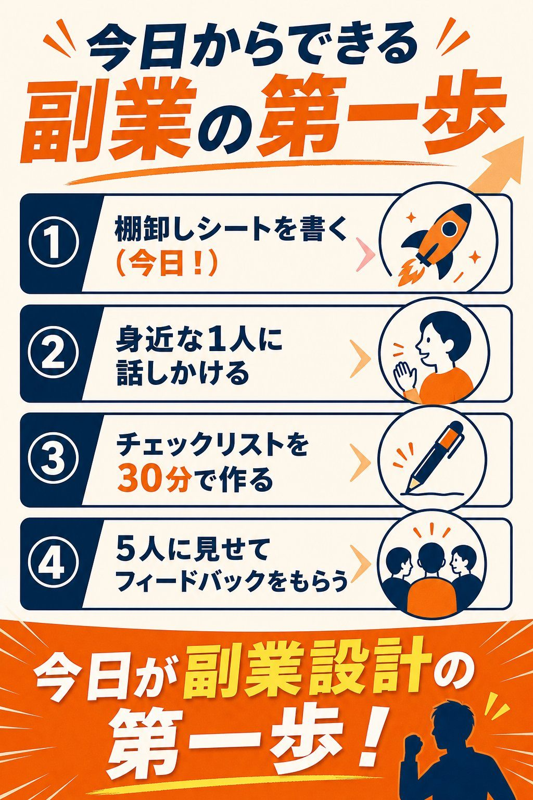
今日からできる副業の第一歩
おわりに
佐伯誠一は、今日も会社に出勤する。
同じ会社、同じ仕事。
しかし、少し違って見える。
自分がこれまで積み上げてきた20年が、誰かの役に立てる。
その確信が、仕事への向き合い方を変えた。
副業を始めて半年。
月3万円ほどの副収入ができた。
大きな額ではないが、「副業がある」という事実が、心の余裕を生み出している。
田村さんからはまた連絡が来た。
「先輩のアドバイスで、先月初めて目標達成できました」と。
佐伯は、その言葉をスマホで読みながら、小さく笑った。
自分の20年間が、誰かの未来に少しでも役立てている。
それが、何より嬉しかった。
副業は、特別な人だけがやるものではありません。
あなたが本業で積み重ねてきた経験は、誰かにとって価値ある商品になります。
新しい自分になるのではなく、今までの自分を活かせばいい。
あなたの本業が、誰かの副業の道を照らすかもしれない。
まず、一枚の紙を取り出して、あなたの「普通」を書き出すことから始めましょう。
今日が、あなたの副業設計の第一歩です。
おわりに
© 竹谷知悦 / 特別プレゼント版